|
[2016年春季二季杯]
7月3日に行われた春季二季杯の様子をお伝えします。何はともあれ、男子優勝、女子三位、個人は八塚（５５）が優勝、 加藤（５５）が三位という素晴らしい結果だったのでここでいろいろ報告するのはよしておきますね。イヤッフーッ！ 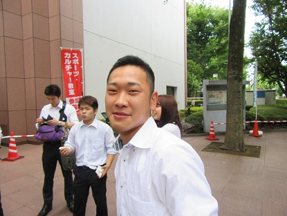 おはよう安藤（５４）、試合で見るのは久々だね。 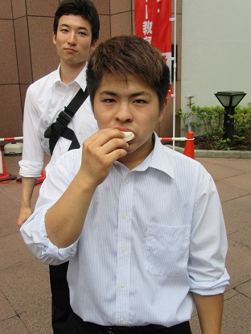 相変わらずの微妙な写真あざす、永安（５４） 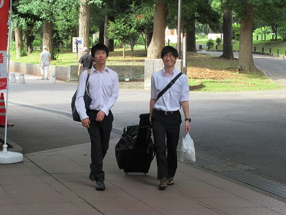 なんかすご～く言い表しがたい表情の二人。 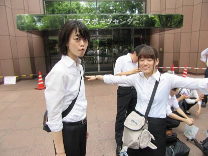 （無題） 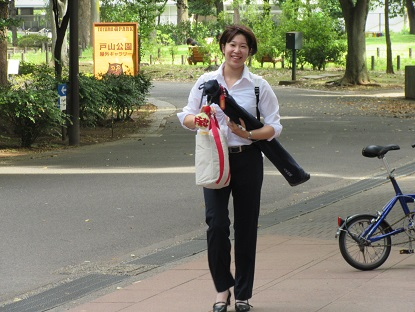 すごーい遠いほうからニコニコしてて、ちょっと怖かった。 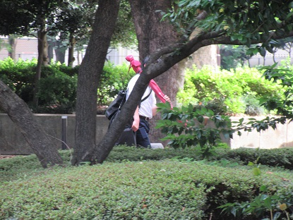 カメラを意識してか隠れるように歩く主将。 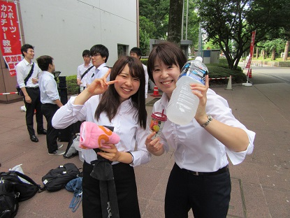 三女にもなると平気で２L買うんだよ、こわいよね（大石/55/左 と 上本/53/右） 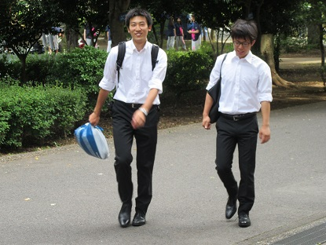 楽しそうな１枚。ちなみに二人は同級生じゃないです。 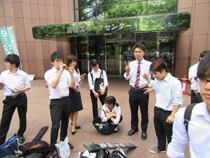 ということで、みなさんおはよう。 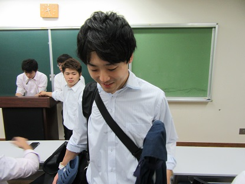 遅刻の第一副将、おはよう。 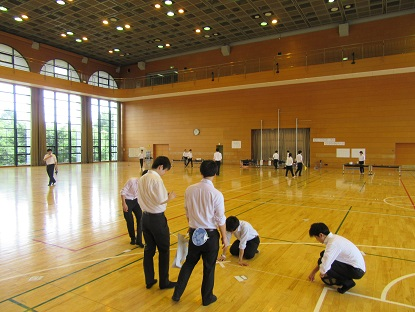 今回は主管校なので会場設営からスタート。 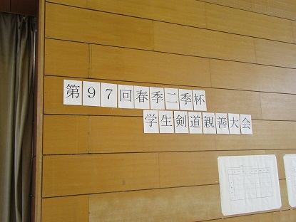 準備完了。 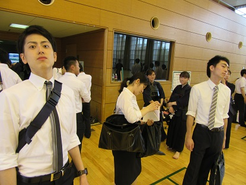 審判の労をとっていただく先輩方もいらっしゃいましたので… 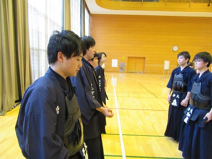 ミーティングです。優勝目指して頑張りましょう。 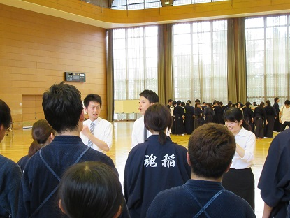 遠目からイケメンをパシャリ。 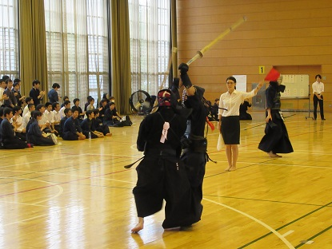 個人戦からスタートです。第一試合の初太刀だから撮れませんでした。 加藤（５５）ごめん。死にます。 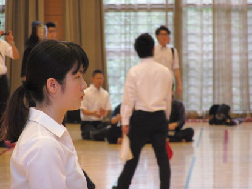 OGの１枚。なんかパンフレット見たいですね（どや 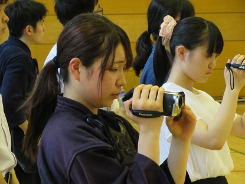 かわゆい 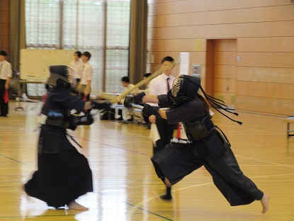 野崎（５４）をかっこよくとってみよう→失敗 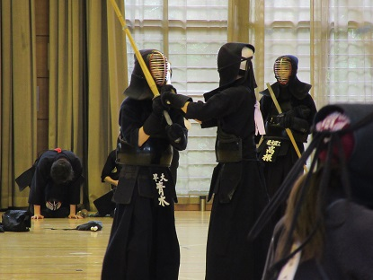 気づいたら向こうのほうで青木（５４）の試合が始まっていた… 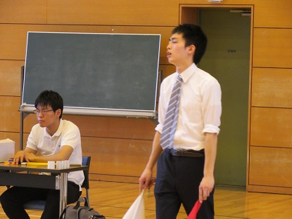 感情むき出しの副審前主将。 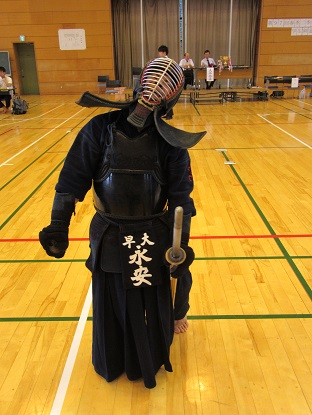 永安負けちゃった～。これはいい感じの１枚ですね。 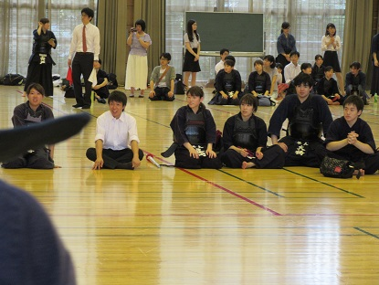 無警戒のみんなを撮るスペシャリストこと私。 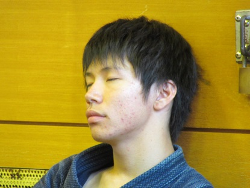 岡（５４）おやすみ…っておいこら。 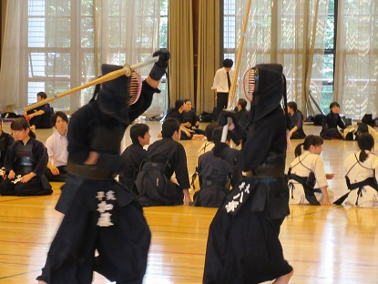 男子個人は勝ち上がって同期対決へ。広報としては撮り損ねてもどっちもうちの奴らだし… とか思ってたら全部ブレてました、すまへん。 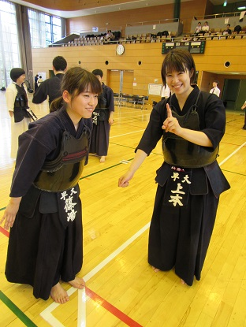 空き時間に。新旧「場外反則女王」のツーショット。 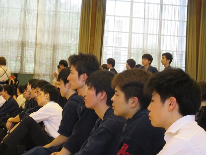 個人男子・八塚（５５）は決勝へ。みんなの真剣な眼差し。 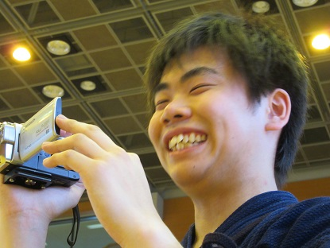 八塚優勝で午前の部終了。ビデオ撮影お疲れさまでした森（５５） 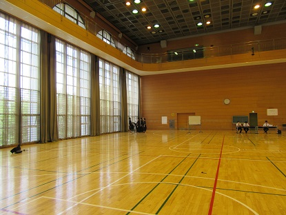 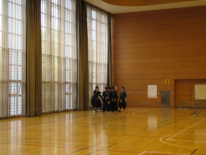 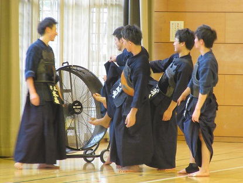 よーくみたら、なにやってんだおまいら。 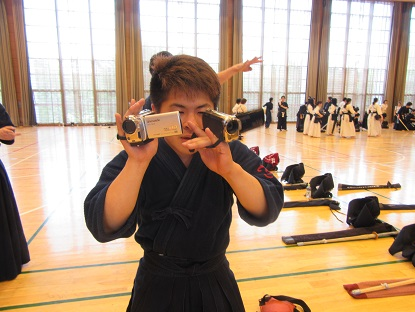 さてさて、午後の部です。整理していたらこんな写真があったので晒します。 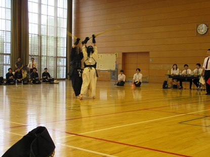 緒戦は明治大学体同連剣道部と。もう手のうち知り合った仲ですね。 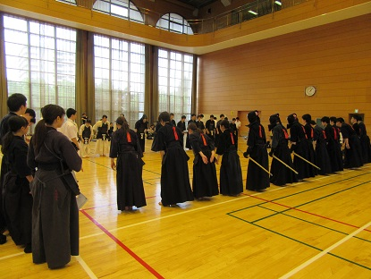 女子団体に続けて男子団体もやるスタイル。 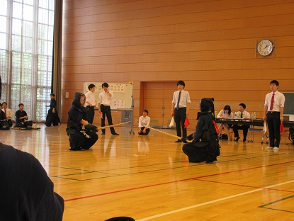 不動の先鋒・岡はさっきの熟睡が効果を発揮していました？ 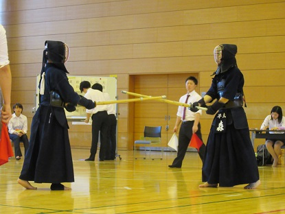 森 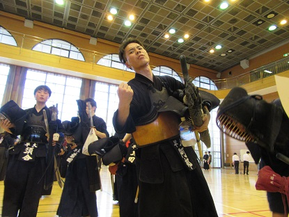 汗だくヤンキー・阿部（５４）のオラ画像。 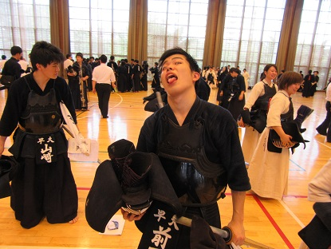 晒しときます（その２） 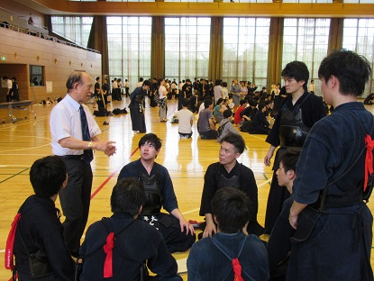 軍師の教えを受けてる、って感じですね。 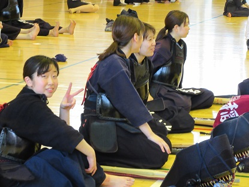 伊藤のピースサイン（広報じゃない人がカメラ向けたらこうなるのね☆死） 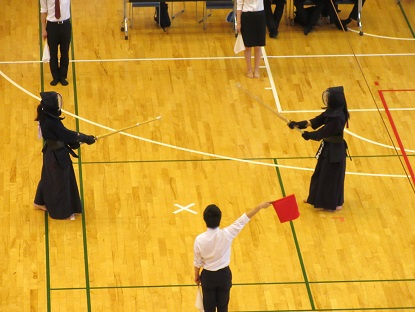 ヒマを利用して最上階から撮ってみました。全日本学生みたいでしょ。 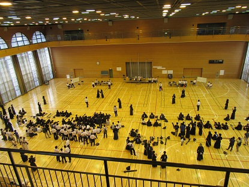 人の割には会場大きすぎ問題。 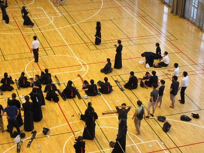 自分を探してみてください。 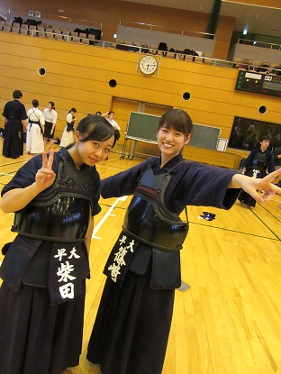 画面の華（その１） 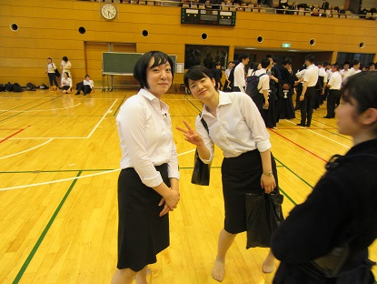 画面の華（その２）深瀬（54・左）は成人式前撮りお疲れさま。 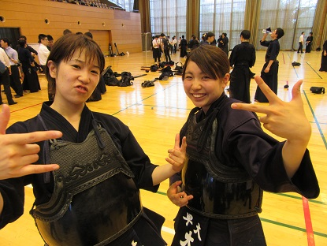 画面の華（その３……違うわ、なんか煽られてるんだわ。 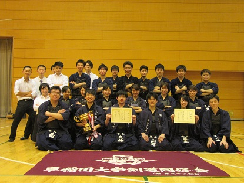 …ってことで優勝じゃ、おらおらおらおらぁーーーー 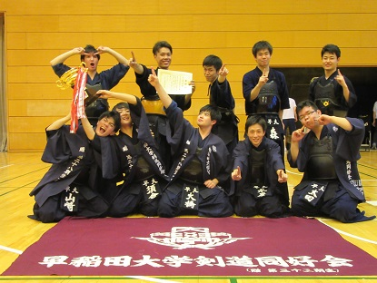 男子は１位！ 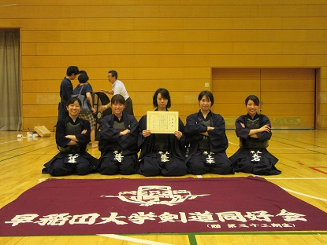 女子も粘りの３位！ 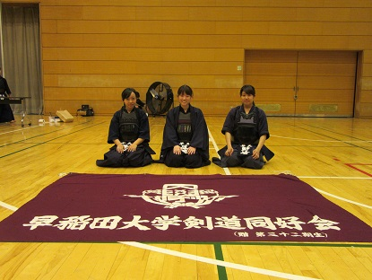 女子個人も健闘！ 男子個人は一年生が躍進！ 最後の１枚。かわいいね（白目） 以上で二季杯と前期の試合は終了です。夏合宿で充電して秋も優勝しちゃいましょう！ それから。試合役員をつとめてくれたみんな、本当にありがとう。優勝はみんなのおかげです。 (※写真へのコメントは全て管理人がしております。) |